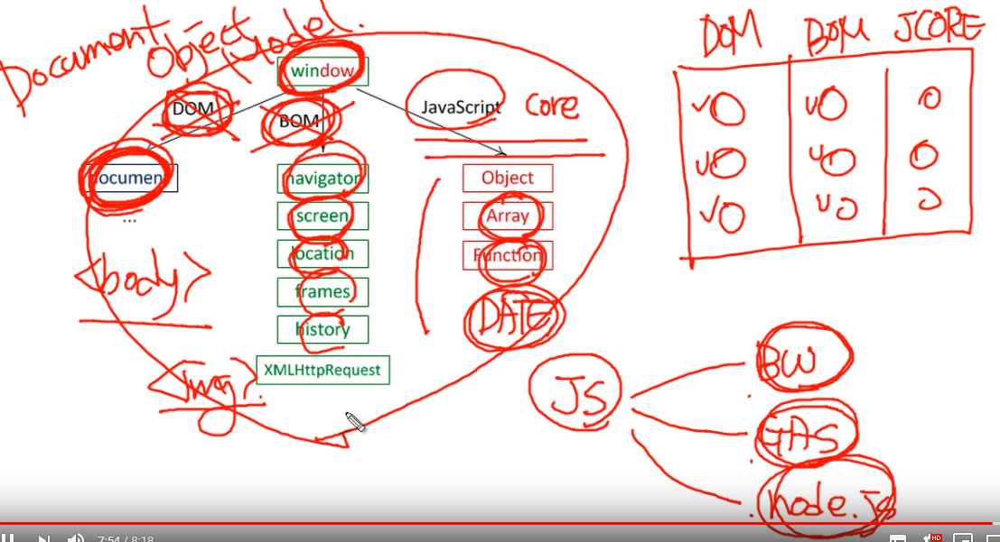

크게 전역객체 window는
1.dom(Document Object Mode)과
웹페이지의 내용을 제어한다.
window의 프로퍼티인 document 프로퍼터에 할당된 Document 객체가 이러한 작업을 담당한다.
Document 객체의 프로퍼티는 문서 내의 주요 엘리먼트에 접근할 수 있는 객체를 제공한다.
2.bom(Browser Object Model)을 가지고있음
-웹페이지의 내용을 제외한 브라우저의 각종 요소들을 객체화시킨 것이다.
전역객체 Window의 프로퍼티에 속한 객체들이 이에 속한다.
그리고 자바스크립트자체는 3.js core라고해서 자바스크립트 자체 객체를가지고있음
그러니 윈도우에도 jscore객체가있는거